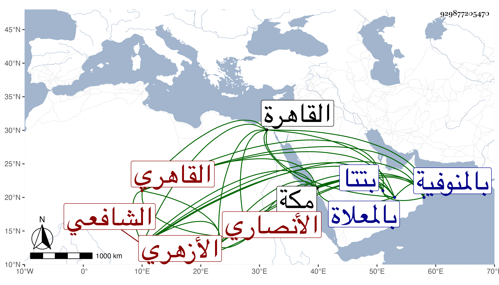

0902Sakhawi.DawLamic.ITO20230111-ara1.EIS1600.929877205470
Biography ID: 929877205470
89
أحمد بن علي بن محمد بن سليمان البهاء الأنصاري الثتائي القاهري الأزهري الشافعي أخو الشرف موسى وأخويه محمد وأبي بكر ووالد محمد الماضي . ولد في سنة سبع وثمانمائة بتتا قرية بالمنوفية وقدم القاهرة فاشتغل بالعلم وكتب المنسوب ثم صحب الأكابر وتعانى المتجر وعرف بالصيانة والديانة وجاور بمكة عدة سنين حتى مات في ليلة الأربعاء سابع عشر صفر سنة ثلاث وستين وصلى عليه بعد الصبح عند باب الكعبة ودفن بالمعلاة ، وكان حلو اللسان كثير الأدب كريم النفس متجملا في حركاته وخدمه والواردين رحمه الله وإيانا .
